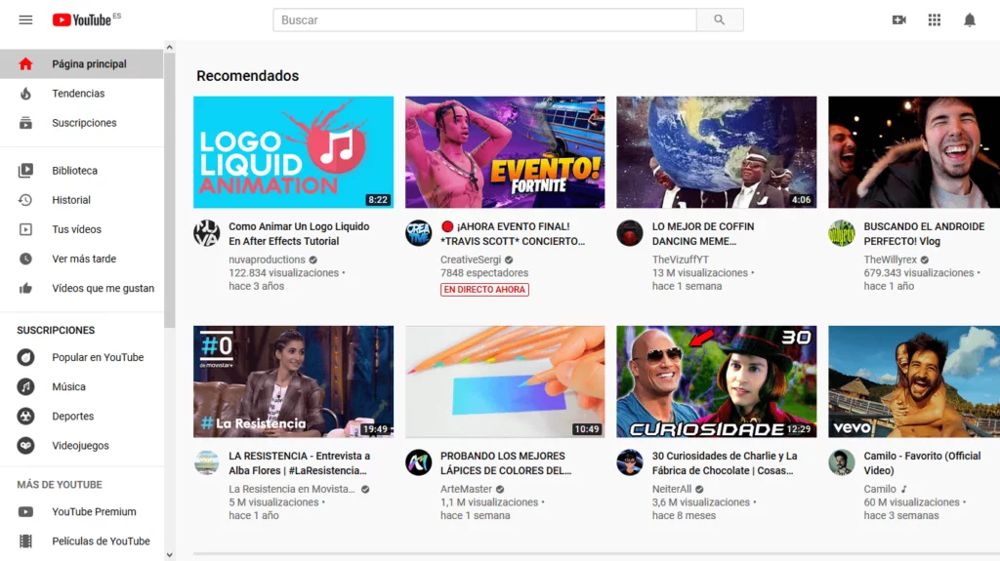

Software evaluado
YouTube
YouTube es una plataforma digital para compartir, visualizar y descubrir contenido audiovisual. Debido a la cantidad de funciones que ofrece y a la variedad de usuarios y dispositivos en los que puede utilizarse, resulta apropiada para aplicar un modelo de evaluación de calidad de software.
Reproducción de videos
Búsqueda de contenido
Cuentas de usuario
Multiplataforma
Modelo utilizado
Ver modelo completo